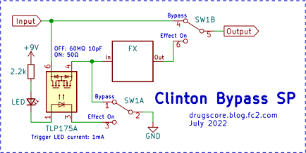

ミレニアムバイパスSP・クリントンバイパスSP
2022年08月15日 カテゴリー：自作エフェクター（アナログ）
2004年頃にはDPDTと3PDTのフットスイッチの価格差が少なくなり、エフェクターのバイパスでは3PDTスイッチを使ったトゥルーバイパスが定番となりました。しかしながら、踏み心地がよく耐久性が高いものを選びたいとか、エフェクター修理で元々取り付けてあったものを使いたい等の理由でDPDTスイッチを使うこともあるかと思います。今回は、DPDTスイッチを使ったバイパスについて改善を試みることにしました。
【ミレニアムバイパス】
DPDTスイッチを使ったエフェクトのバイパス方式として有名なのが、ミレニアムバイパスです。JFETではなくMOSFETを使ったMillenium 2というものもあります。※ミレニアムの正式なスペルは、nが2つのmillennium
・The Millenium Bypass - True Bypass and LED indicator with only a DPDT
この方式ではバイパス時エフェクト回路の入力に何も接続されていない状態になるため、ゲインが高いエフェクターの場合はノイズの原因になることがあります。そこで、エフェクト回路の入力をアース（GND）に接続する方法も解説されています（Millenium 2 Bypass Plus）。
・More Fun With the Millenium 2 Bypass
そしてさらに、フォトリレーを使ったバージョン「SP」を考えました。※ブレッドボード上での動作確認のみで、実機に組み込みはしていません。
スイッチオン／オフを反転させるためにMOSFETをもう一つ追加してあります。接続が変わりますが、Pch MOSFETを使う方法もよいかもしれません。Q1、D3はMOSFETの入力保護用です。部品点数がやや多く、あまりコンパクトにならないのが難点です。
【クリントンバイパス】
下記バイパス方法解説ページに、クリントンバイパスというものが掲載されています。エフェクト入力部にFETスイッチやoptoisolator（フォトカプラ、オプトカプラ、フォトリレー等）を使うという方法です。
・The Ins and Outs of Effect Bypassing
さらに、バイパス時エフェクト回路の入力をGNDに接続するバージョン「SP」を考えました。

バイパス時にTLP175Aが数十MΩ（実測100MΩ以上）になるので、バイパス音にほとんど影響がありません。一応10pF程度の容量（シールドケーブル10cm程度分）が信号経路にぶら下がりますが、2～3台程度であればまず問題ないでしょう。
もちろんLEDは直列ではなく別々に接続することもできます。こちらの方がインジケーター用LEDの輝度調整がしやすいと思います。
＜フォトリレーの選択＞
フォトリレーはソリッドステートリレーの一種で、各メーカーで同様の商品がありますが名称が違います（MOS FETリレー、PhotoMOSリレー等）。バイパス音への影響を少なくするため、できるだけ端子間容量が少ない方が望ましいです。
- TLP175A（秋月電子で65円）
端子間容量10pFで、消費電流も少なく低価格です。 - G3VM-21GR（500円程度）
高価ですが、低オン抵抗・低端子間容量（低C×Rタイプ）です。 - アナログフォトカプラ LCR0203（秋月電子で120円）
端子間容量を実測すると5pF（1kHz）でした。オフ時の抵抗値上昇が遅く、スイッチング用途には適していないと思います。参考ページ→【電子部品】CdSアナログリニアフォトカプラ：LCR0203の動作確認